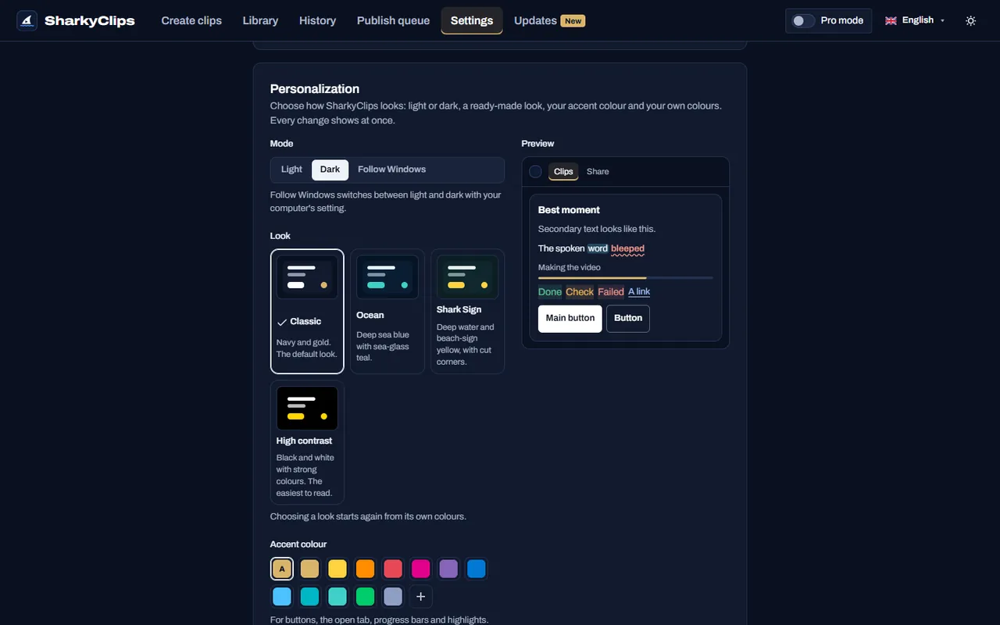

Всё, что умеет SharkyClips
От длинного стрима к клипам, которые смотрят до конца. Простой режим делает всё сам; режим Pro даёт каждую настройку.
Лучшие моменты
Находит моменты, достойные публикации
SharkyClips слушает и читает, как монтажёр.
- Громкость, смех, крики и слова-реакции
- Взрывы чата в повторе чата (Twitch, YouTube, Kick)
- Края клипа попадают между словами, а не посреди фразы
- Локальный ИИ оценивает каждый клип и пишет заголовки

Игры
Знает вашу игру
В Delta Force и League of Legends он читает сам экран игры.
- Убийства, мультикиллы, цели и победы
- Мультикилл всегда помещается в один клип
- Заголовки по тому, что произошло в игре
- Другие игры в виде профилей, которые можно добавить
Другие игры тоже работают: моменты тогда берутся из вашего голоса, звука и чата.
Монтаж
Клипы, готовые к публикации
Видео 9:16: вебка сверху, игра снизу.
- Пословные субтитры, в том числе справа налево
- Мат запикивается на 11 языках, и каждый клип проверяется ещё раз
- Умный зум, мгновенный повтор и пузыри чата
- Монтаж по тексту: удаляйте слова, чтобы вырезать их
Клип, в котором мат всё ещё слышен, не публикуется автоматически, пока вы его не прослушаете.
Простой и Pro
Простой режим делает всё
Перетащите видео и вернитесь к готовым клипам. Переключитесь в режим Pro ради каждой настройки.
- Лучшие клипы выбираются, подгоняются и рендерятся сами
- Клипы сами после стрима (папка OBS или ваш канал)
- Отмечайте моменты во время игры горячей клавишей или !clip в чате
- Одобряйте клипы с телефона

Публикация
Одна кнопка для всех площадок
YouTube Shorts, TikTok и Instagram Reels из одного окна.
- Подпись для каждой площадки с проверкой ограничений
- Опубликовать сейчас или выбрать время
- Загрузки на YouTube через ваш собственный бесплатный проект Google
- История публикаций, чтобы ничего не ушло дважды

TikTok и Instagram
SharkyClips Helper заполняет вашу загрузкуНовое
Небольшое расширение браузера. SharkyClips открывает страницу загрузки TikTok в вашем браузере, а Helper вставляет видео и подпись.
- Останавливается перед «Опубликовать»: вы проверяете и публикуете сами
- Работает само в Edge, Opera и Brave; Chrome требует один шаг настройки
- Работает только на страницах TikTok и Instagram
- Общается только с SharkyClips на вашем компьютере, больше ни с чем
Пароли никогда не сохраняются и не вводятся за вас: в TikTok вы входите сами, один раз.
Фото
Слайд-шоу из фотоНовое
Превратите от 2 до 20 фото в вертикальное видео: идеально для «до и после».
- Подписи «До», «Процесс» и «Результат» на вашем языке
- Медленный плавный зум на каждом фото и мягкие переходы
- Ваша музыка и логотип SharkyClips в конце
- Публикуется той же кнопкой «Поделиться»

Персонализация
Настройте под себяНовое
Выберите стиль приложения: Классика, Океан, Shark Sign или Высокий контраст.
- Тёмный и светлый вариант для каждого стиля
- Свой акцентный цвет с проверкой контраста
- Спокойная или полная анимация, или без неё
- Небольшая игра с акулой, пока обрабатывается стрим

Языки
11 языков
Приложение, распознавание речи, заголовки и субтитры.
- English, Türkçe, Español, Português (Brasil), Deutsch, Français, Magyar
- Русский, العربية (справа налево), 中文, 日本語
- Заголовки могут быть на другом языке, чем речь
- Субтитры переводятся с сохранением тайминга
Распознавание речи (Whisper) и ИИ работают на вашем компьютере на всех языках.
Любой ПК
Работает на обычных ПК
Игровой ПК не нужен. SharkyClips проверяет ваше железо и выбирает подходящую настройку.
- Видеокарта NVIDIA сильно ускоряет работу
- Лёгкий режим для старых ПК и ноутбуков без видеокарты
- Тихий режим ставится на паузу, пока вы играете или смотрите на весь экран
- Закрытое приложение продолжает с того же места
На маленьком 2-ядерном ноутбуке без видеокарты 17-минутное видео в лёгком режиме обрабатывается примерно 16 минут.
Конфиденциальность
Приватно с самого начала
Сервера SharkyClips не существует.
- Распознавание речи и ИИ работают на вашем компьютере
- Без аккаунта, аналитики и рекламы
- Ваши входы хранятся зашифрованными на компьютере
- Видео покидают компьютер, только когда вы ими делитесь
Прочитайте полную политику конфиденциальности.